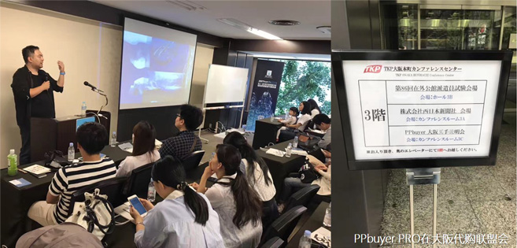
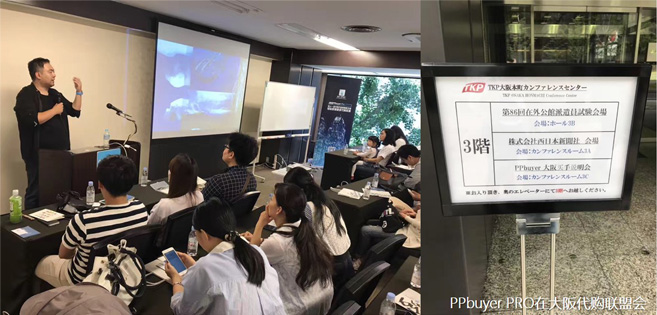

关于代购联盟
“代购孤立一个人,同行之间缺乏互通,资源无法共享;拼命销售产品,却对厂商及店铺却没有话语权”
PPbuyer在日本发起倡议,建立“全球化的代购联盟”，希望将在全世界的代购从业者联合起来，实现代购之间的资源及讯息的共享，并为代购与店铺、厂商建立有效的沟通合作桥梁。目前,PPbuyer在日本已经召开了数次代购联盟大会,吸引了上万名代购加入联盟。
东京代购联盟成立大会
横滨代购联盟成立大会
横滨代购联盟成立大会
涉谷代购联盟成立大会

关于代购联盟
“代购孤立一个人,同行之间缺乏互通,资源无法共享;拼命销售产品,却对厂商及店铺却没有话语权”东京代购联盟成立大会
横滨代购联盟成立大会
横滨代购联盟成立大会
涉谷代购联盟成立大会